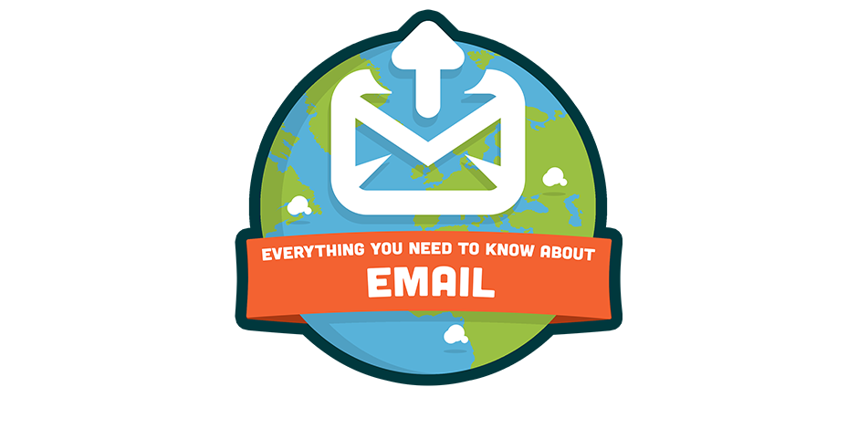
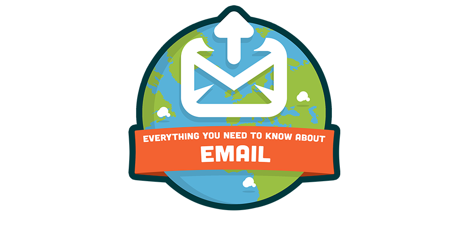

Communication.
"A process by which information is exchanged between individuals through a common system of symbols, signs, or behavior" (Merriam-Webster).
I love communicating with people. I like doing this through any medium I can find. Designing, writing, telling tories over coffee, telling jokes over a beer, all allow us to share experiences and ideas with each other. And that's what it's all about.
Check out some of my work.
 

Some things I have Written.
Here are a few links to blog posts I have written. I have been a community manager for tech start-up Evently for a few months now, and have enjoyed writing about how understanding audience data can help the events industry.
A few other projects I am working on.
Brew Raffle
Visit Raffle.io if you need to solve tea-making problems. Brew Raffle helps you to deiced who makes the next round of tea. Enter the names of those wnating a tea, and Brew Raffle will amicably decide the brewer.
Remember: You have to be in the raffle to be made a tea!
Chrome TV Project
This project is currently on hold, but I am aiming to comlplete in the next month or so. It is a chrome extension that allows you to easily browse the free TV channels on BBC, ITV and Channel 4 on your laptop or home computer.
Secret List Project
This project is less secret, more in it's early stages and not ready for unveiling. I will post more on here once there is more to show.
All about me.
I try to be a lot of things. As a result, I have dabbled in lots of different fields. As I said before, I love communicating and interacting with people, and being able to do this with my work is what I strive for.
Things I want to be (when I grow up):
- Designer
- Writer
- Developer
- Astronought
Blah
Contact me?
Wagwan.